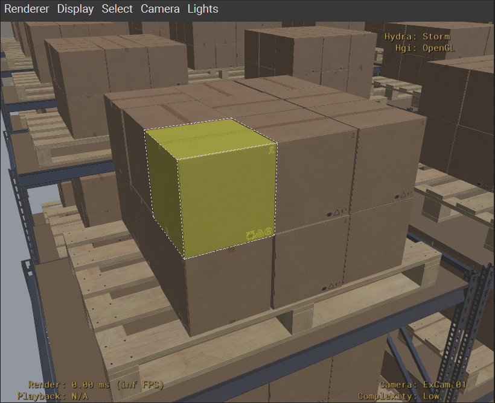
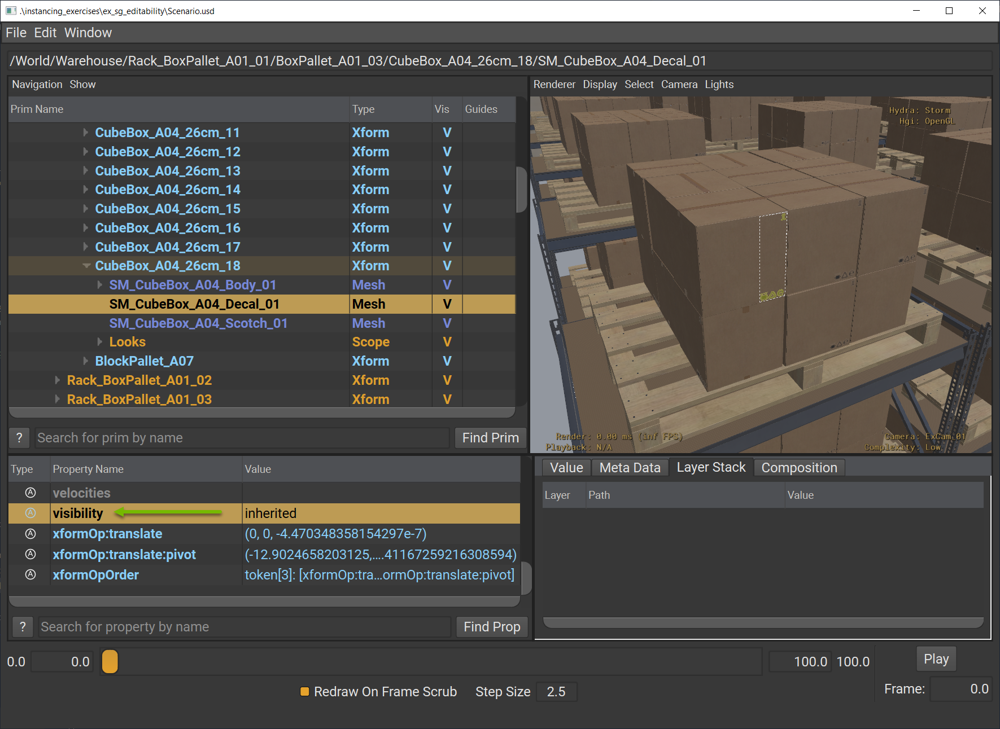
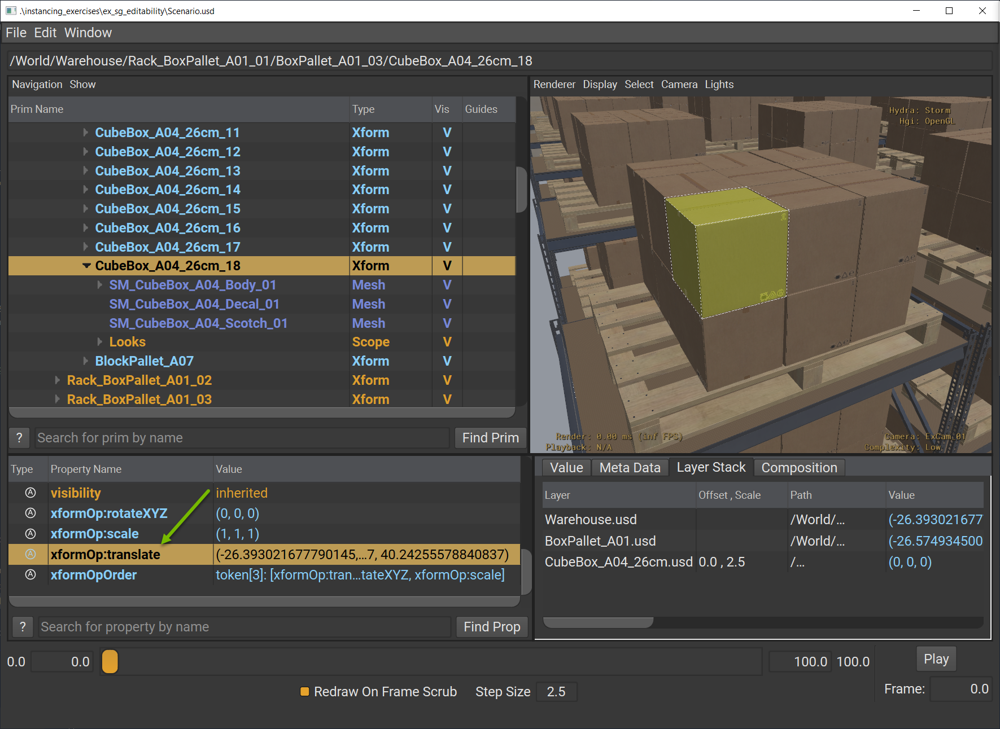
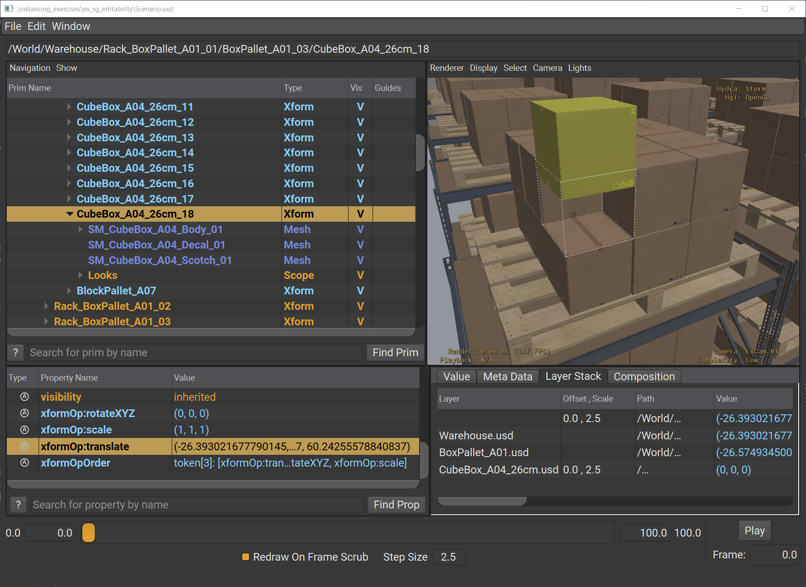

Introduction to Scenegraph Instance Refinement#
Instance Editability#
Scenegraph instances cannot be directly overridden on the local layer stack.#
The key to increased performance via instancing comes from the fact that instances can’t be edited. You are choosing to limit OpenUSD’s super power of sparse overrides to get the performance improvement.
Here are the three rules to remember about instance editability:
Prototypes are a runtime data model and are not editable.
Instance proxies are not editable. Local opinions are discarded.
Instanceable prims are editable.
The following USDA layer shows valid and invalid overrides you might try to perform to demonstrate those rules.
NOT editable
This override is invalid. In this case, the developer saw a “/__Prototype_01” item in the usdview tree view that is just used for reference and thought they could edit it. This override produces a dangling override completely unrelated to the actual prototype.
#usda 1.0
(
defaultPrim = "World"
metersPerUnit = 0.01
upAxis = "Z"
)
def Xform "World"
{
def "RobotArm_01" (
references = @./RobotArm.usd@
instanceable = true
)
{
}
}
over "__Prototype_01" {
color3f primvars:asset_color = [(1, 0, 0)]
}
NOT editable
“/World/RobotArm_01/joint_1” is an instance proxy. This override on is invalid.
#usda 1.0
(
defaultPrim = "World"
metersPerUnit = 0.01
upAxis = "Z"
)
def Xform "World"
{
def "RobotArm_01" (
references = @./RobotArm.usd@
instanceable = true
)
{
over "joint_1" {
double3 xformOp:rotateX = 10
}
}
}
Editable
“/World/RobotArm_01” is an instanceable prim and the translation override is valid. This will successfully position the prim at (10, 0, 20).
#usda 1.0
(
defaultPrim = "World"
metersPerUnit = 0.01
upAxis = "Z"
)
def Xform "World"
{
def "RobotArm_01" (
references = @./RobotArm.usd@
instanceable = true
)
{
double3 xformOp:translate = (10, 0, 20)
}
}
What Is Refinement?#
At this point, you may be thinking, “In my use case, if I need some variety or diversity in my objects does that mean that I can’t use instancing? I have to choose one or the other?”
Not necessarily. OpenUSD offers a lot of flexibility so you can’t have the best of both worlds. Even though you cannot edit instances, you can refine them. What we call refinement are permissible edits on the instanceable prim that can have one of these effects:
The edit is natively inherited by the instance.
The edit creates a change in the composition of that instance and it triggers the creation of a new prototype.
By using refinement, you can build large, diverse scenes, but still leverage instancing wherever possible.
In the following lessons we will explore some common techniques for downstream refinement of instances:
Deinstancing
Hierarchical Refinement
Primvars
Transformation Operations (xformOps)
Visibility
Refinement Using Variant Sets
Ad Hoc Arcs Refinement
Broadcasted Refinement
Before getting into the different scenegraph instance refinement techniques, let’s explore instance editability with a hands-on exercise.
Exercise: Instance Editability#
Introduction#
In this exercise, you will explore the fundamental rules of instance editability by attempting to modify different types of prims in an instanced scene. You’ll discover which prims can be edited, which cannot, and understand why these restrictions exist for optimal performance in USD workflows.
Immutability of Instance Proxies#
We will pretend we’ve been asked to remove the decal from a box to represent a different type of box in our digital twin. Normally, you might create a new asset or variant set within the asset, but we will go with the naive approach of making the change in our aggregated scene. We are starting from a state where the component models are already instanced.
Let’s start by opening the warehouse scenario.
Run in the terminal:
Windows:
.\scripts\usdview.bat .\instancing\ex_sg_editability\Scenario.usd --camera ExCam_01
Linux:
./scripts/usdview.sh ./instancing/ex_sg_editability/Scenario.usd --camera ExCam_01
Tip
Click Camera > Select Camera > ExCam_01 if you ever lose your place in the scene or want to get back to this camera position.
Click on the top left box closest to the camera in the Viewport.

Hover your mouse over the Tree View panel and press the “F” key to frame the selected prim in the Tree View.
You should see “CubeBox_A04_26cm_18” selected in the Tree View panel. This is an instanceable prim.
Click the triangle to the left of the select prim in the Tree View to expand the select prim’s hierarchy.
Click on “SM_CubeBox_A04_Decal_01” that was revealed in the Tree View.
We’ve decided that this box should not have any decals. We want to hide the decals on the box. This is an instance proxy though as denoted by the dark blue text. We’ll see what happens when we try to author this change.
In the Property panel, click on the “visibility” attribute.
 We’ll use this property selection in subsequent steps to try to hide the decal.
Click Window > Interpreter to open the Interpreter window.
Run the following code in the Interpreter window:
1vis = usdviewApi.property
2vis.Set(UsdGeom.Tokens.invisible)
Tip
usdview has a special UsdViewApi object–accessible from usdviewApi in the Interpreter window–that gives us convenient context-aware access to our selections.
In Step 6, we selected the “visibility” attribute. We can get a Usd.Attribute object for that attribute using usdviewApi.property. Then, we can try setting it to invisible.
You should see an error like this in the Interpreter window:
Traceback (most recent call last):
File "<input>", line 1, in <module>
pxr.Tf.ErrorException:
Error in 'pxrInternal_v0_25_5__pxrReserved__::UsdStage::_ValidateEditPrim' at line 1504 in file C:\g\163073426\USD\pxr\usd\usd\stage.cpp : 'Cannot create property spec at path </World/Warehouse/Rack_BoxPallet_A01_01/BoxPallet_A01_03/CubeBox_A04_26cm_18/SM_CubeBox_A04_Decal_01>; authoring to an instance proxy is not allowed.'
Error in 'pxrInternal_v0_25_5__pxrReserved__::UsdStage::_SetValueImpl' at line 7102 in file C:\g\163073426\USD\pxr\usd\usd\stage.cpp : 'Cannot set attribute value. Failed to create attribute spec </World/Warehouse/Rack_BoxPallet_A01_01/BoxPallet_A01_03/CubeBox_A04_26cm_18/SM_CubeBox_A04_Decal_01.visibility> in layer @anon:0000020B75F5EAE0@'
The decal prim is a instance proxy which makes it immutable. OpenUSD outputs an error explaining that we can’t author a local opinion to change the visibility of the decal prim.
Instances are not entirely immutable though. Instanceable prims (i.e. the root prim of an instance) can be edited. This is what allows scenegraph instances to have unique transformations in the scene. Let’s look at how instanceable prims can be mutated.
Mutability of Instance Prims#
Click on “CubeBox_A04_26cm_18” in the Tree View.
This is the instanceable prim
In the Property panel, click on the
xformOp:translateattribute.

This attribute on the instanceable prim has a unique value compared to all of the other boxes on this pallet and the prim has a unique computed world space position compared to all other prims on this stage. This mutability of the instanceable prim is key for the transformation of instances, but it has other useful benefits as we’ll see in the following units.
Let’s override the xformOp:translate attribute to further drive this point home.
Run the following code in the Interpreter window:
1translate = usdviewApi.property
2x, y, z = translate.Get()
3translate.Set((x, y, z+20.0))

Note how the box moved up 20 units in the viewport and it didn’t produce any errors.
This component-based instancing scheme enables us to benefit from instancing, but we can still perform tasks like removing and moving instanced boxes within our shipping and receiving warehouse. You can author other opinions on the instanceable prim to control things like visibility or activation of a prim.
Close usdview.
Conclusion#
You’ve successfully demonstrated the three key rules of instance editability: prototypes and instance proxies are immutable, while instanceable prims remain editable. This understanding forms the foundation for learning refinement techniques that allow you to introduce variety into instanced scenes while maintaining performance benefits.